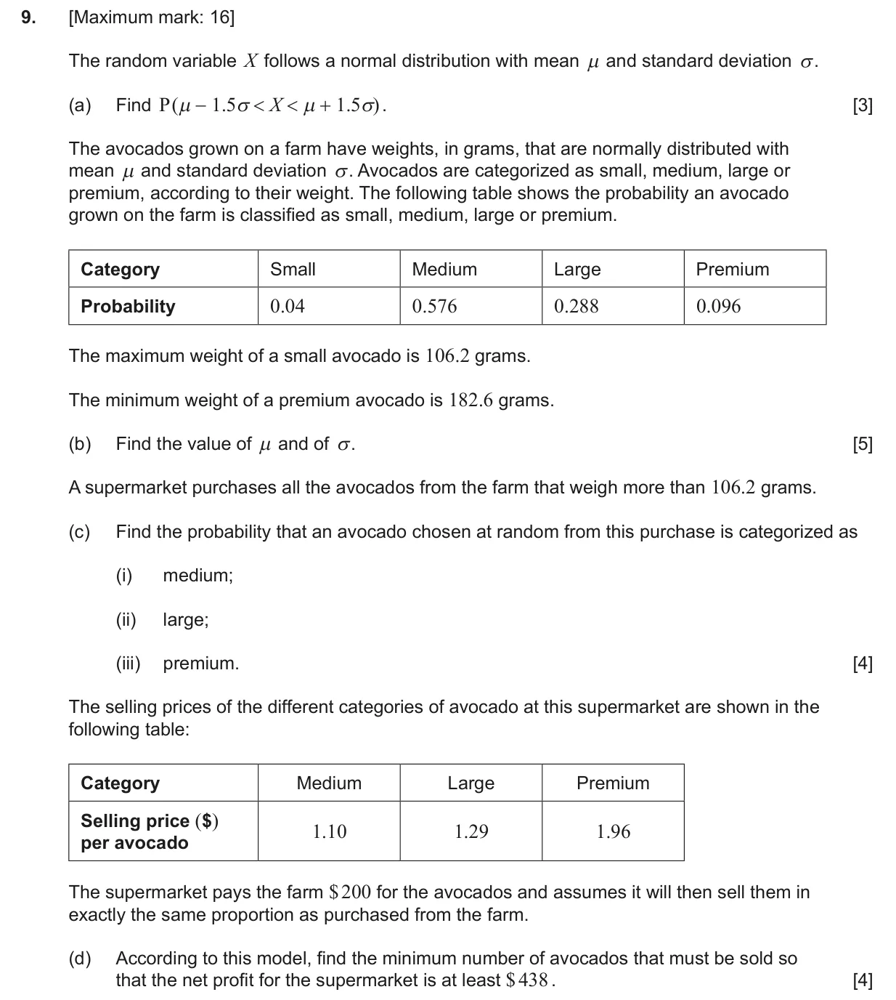
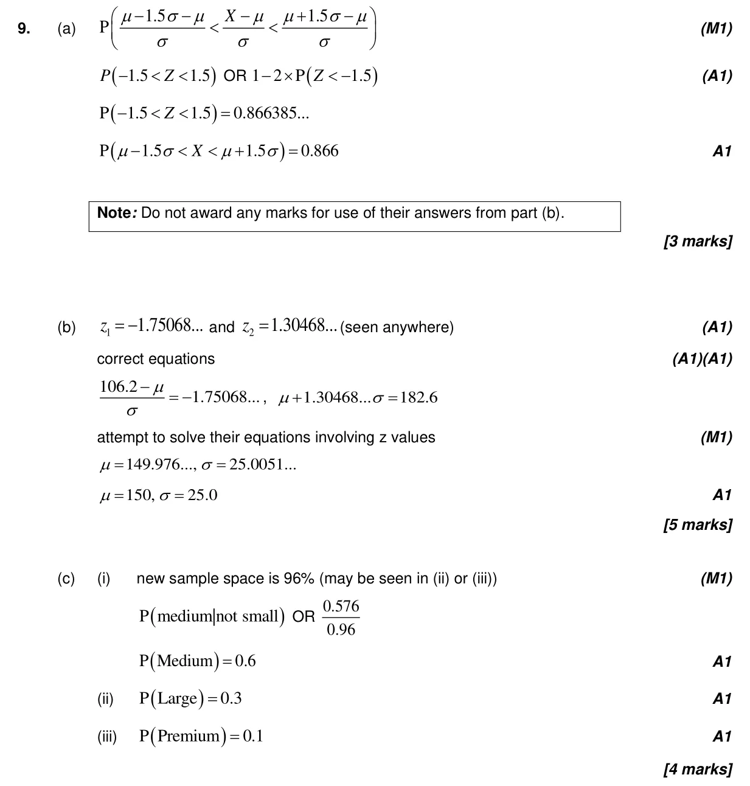
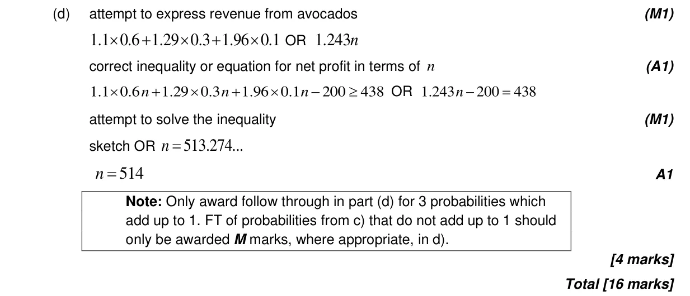

4.12 Standardization of normal variables4.11 Formal conditional probability and independence4.7 Discrete random variables4.9 Normal distribution and calculations
Question

Markscheme


16 marks - Nov P2 TZ0 - Section B


